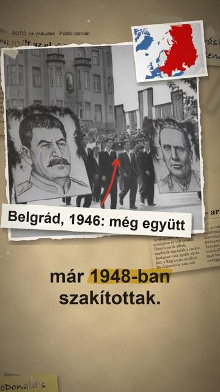
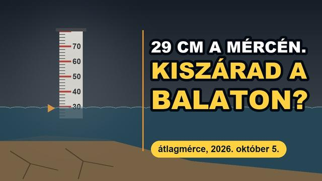
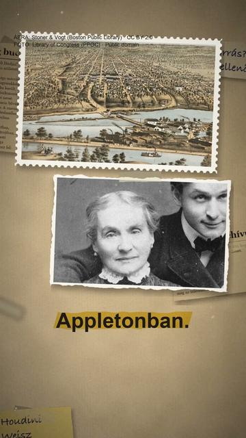
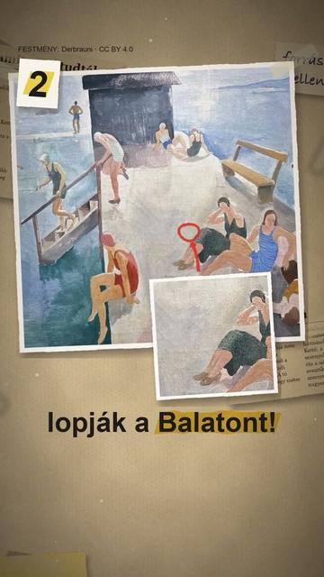
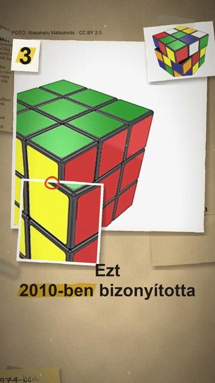
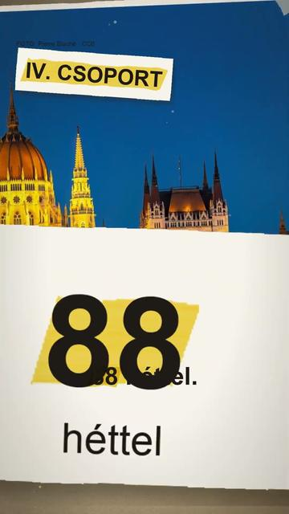
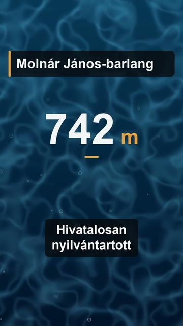

Magyarország
A Balaton, a budai barlangok, a Rubik-kocka és a magyar nyelv: amit mindenki tud Magyarországról, és ami ebből tényleg igaz.
Cikkek
ÖsszesEllenőrzött állítások
Minden videó

Budapesten nyílt az első McDonald's a keleti blokkban?
Valóban kiszárad a Balaton?
Tényleg budapesti volt Houdini?
3 dolog, amit nem tudtál a Balatonról
3 dolog, amit nem tudtál a Rubik-kockáról
Részben igazTényleg a magyar a világ egyik legnehezebb nyelve?
Mi folyik Budapest alatt? Egy barlang, amit ma is csak búvárok járnak Mi folyik Budapest alatt? Egy barlang, amit ma is csak búvárok járnak
Mi folyik Budapest alatt? Egy barlang, amit ma is csak búvárok járnak